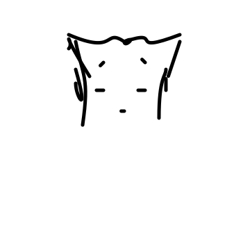

Teaching an Agent to Sketch One Part at a Time
ECCV 2026
A multi-turn visual agent that draws editable vector sketches one semantic part at a time.
@inproceedings{du2026teaching,
title={Teaching an Agent to Sketch One Part at a Time},
author={Du, Xiaodan and Xu, Ruize and Yunis, David and Vinker, Yael and Shakhnarovich, Greg},
booktitle={European Conference on Computer Vision},
year={2026}
}